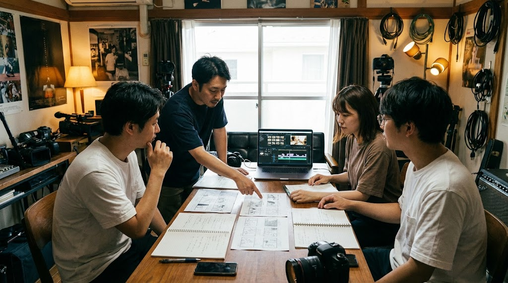
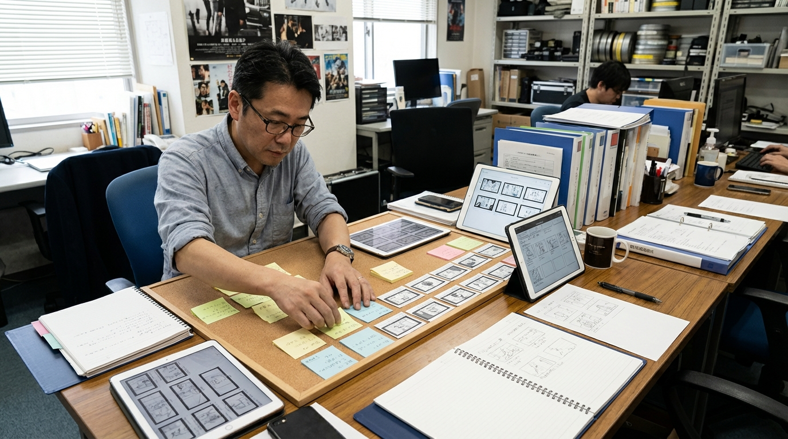
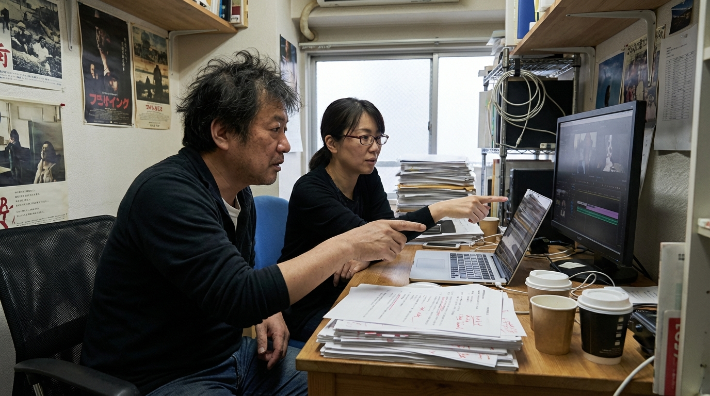

構成整理が会議後に重い
ヒアリング内容を構成案や台本へ落とし込むまでに時間がかかりやすい。

イベント・エンタメの AI 活用・業務改善
進行連絡・確認共有・顧客対応を、現場で回る形に整える伴走型 AI コンサル
AI-SABI が、課題整理から活用方針、ツール選定、連携・自動化設計、定着支援まで伴走し、イベント・エンタメの業務改善を現場に合う形で進めます。進行連絡、確認共有、顧客対応など、成果が見えやすい業務から整え、必要に応じて半自動化や自動化候補まで設計します。
イベント・エンタメで起きやすい課題
ヒアリング内容を構成案や台本へ落とし込むまでに時間がかかりやすい。
クライアント向けの伝え方が属人化し、確認や差し戻しが発生しやすい。
修正完了後にすぐ次案件へ移るため、報告や共有が遅れやすい。
撮影メモや編集時の注意点が散在し、引き継ぎに時間がかかりやすい。
イベント・エンタメ目線で変える 4 ステップ
進行連絡、確認共有、顧客対応など、どこが重いかを整理します。
最初に効果が見えやすい 1 業務を決めます。
下書き支援、要約、一次対応、共有、ツール連携まで、どこまで任せるかを設計します。
イベント・エンタメの実務フローに合わせて調整し、使い続けられる状態まで伴走します。
イベント・エンタメ目線で変える業務
イベント・エンタメ目線で選ばれる 3 つの理由
小さく始めやすい
最初から全工程を変えるのではなく、効果が見えやすい構成案や修正連絡から着手します。だから、制作現場でも無理なく取り入れやすくなります。

活用範囲まで設計する
業務ごとに、AI の下書き支援で止めるか、要約・共有・一次対応を半自動化するか、条件が合う周辺業務は自動化まで進めるかを切り分けます。そのため、現場に合わない過剰導入を避けながら改善できます。

定着まで伴走する
構成整理や納品報告の型を育てながら改善し、担当者が変わっても引き継ぎやすい状態まで伴走します。そのため、属人化を減らしながら使い続けやすくなります。
運用イメージ
Case 01
Case 02
こんな相談から始められます
会議後の整理を軽くしたい。
担当者ごとの差を減らし、確認しやすくしたい。
完了後すぐ共有できる形にしたい。
他サービスとの違い
| AI-SABI | 汎用 AI ツール導入 | 外注代行 | |
|---|---|---|---|
| 対象業務の決め方 | ○ 構成・修正・納品報告から優先順を整理 | △ 使い道は担当者判断に寄りやすい | △ 要件整理が先に必要 |
| 活用範囲の設計 | ○ 下書き支援から自動化候補まで切り分ける | △ 単発利用で止まりやすい | × 自社にノウハウが残りにくい |
| 確認体制 | ○ AI と人の確認分担まで整理 | △ 確認ルールは各自設計 | × 外部依存になりやすい |
| 定着支援 | ○ チームで使う型まで育てる | △ 導入後の浸透に工夫が必要 | × 横展開しにくい |
支援プラン
初期診断
業務改善伴走
定着支援
横展開支援
支援対象業務、伴走期間、必要なサポート内容に応じてご案内します。まずはお問い合わせください。
LINEで無料相談ご利用までの流れ
公式LINEから、現在の課題と重い業務をヒアリングします。
最初の 1 業務を決め、改善方針を整理します。
AI 活用の試行、連携・自動化範囲、確認ポイントを整えます。
成果を見ながら別業務や別担当者へ広げます。
よくあるご質問
はい。公式LINEから無料相談いただけます。友だち追加後に、いま重い業務や気になっている業務を書いていただければ、着手しやすい改善テーマを整理します。
問題ありません。進行連絡や確認共有など、どの業務から始めると効果が出やすいかをイベント・エンタメの現場フローに合わせて整理します。
はい。共通化できる型と案件固有の調整点を分けて設計します。
AI の下書き支援、要点整理、チェック観点の提示、必要に応じた自動化候補まで含め、送信前の確認基準と運用ルールを整理します。
大丈夫です。先に課題と運用方針を整理し、その後で必要な使い方を設計します。
対象業務、伴走範囲、期間によって変わるため、固定表示はしていません。お問い合わせ後にご案内します。
公式LINE
公式LINEの初回相談では、イベント・エンタメで今重い業務、活用方針、ツール選定、連携・自動化候補まで一緒に整理します。